La Gateway Arch (« arche passerelle ») est située dans le centre-ville de Saint-Louis
dans l'État du Missouri, aux États-Unis. Symbole de la ville, cette arche recouverte d'acier
inoxydable mesure 192 mètres de hauteur, ce qui en fait le plus grand monument qui peut se
visiter dans l'État, la plus grande arche du monde et le monument artificiel le plus haut du
pays. Elle est consacrée à la conquête de l'Ouest, comme le mémorial dont elle fait partie.
L'arche est située sur la rive ouest du fleuve Mississippi, quelques kilomètres après sa
confluence avec la rivière Missouri et presque sur un axe nord-sud, où la ville de Saint-Louis a
été fondée en 1764. Elle a été conçue par l'architecte Eero Saarinen,
tandis que Hannskarl Bandel en est l'ingénieur structurel.
La construction commencée le 12 février 1963 — après le décès de son concepteur — est achevée le
28 octobre 1965. Le monument à lui seul a coûté plus de 13,4 millions de dollars à l'époque,
soit près de 96 millions de dollars en 2013. Il a été ouvert partiellement au public le 10
juillet 1967 et inauguré officiellement le 25 mai 1968.
Un bâtiment hors normes
La largeur et la hauteur de l'arche sont de 192 mètres, soit plus de deux fois la hauteur de
la Statue de la Liberté21. L'arche est le plus grand mémorial aux États-Unis et le plus
grand monument en acier inoxydable dans le monde.
Les sections des jambes de l'arche sont des triangles équilatéraux, allant de 16 mètres de
côté en bas à 5,2 mètres en haut. Chaque paroi est constituée d'un revêtement en acier
inoxydable couvrant un ensemble de deux parois en acier au carbone avec du béton armé du sol
au milieu (91 mètres), avec des compléments d'acier au carbone jusqu'au sommet. L'arche est
creuse pour y loger un système de tramway unique qui emmène les
visiteurs du sol à une zone et terrasse d'observation au sommet.
La charge de structure est supportée par une conception à revêtement particulier. Chaque
jambe est noyée dans 23 570 tonnes de béton soit 13 mètres d'épaisseur et 18 mètres de
profondeur. Vingt pieds de la fondation sont dans la roche. L'arche est résistante aux
tremblements de terre et est conçue pour se balancer jusqu'à 23 centimètres dans les deux
sens. Cela permet de résister à des vents allant jusqu'à 240 km/h. La structure pèse 38 898
tonnes, dont 25 980 tonnes de béton, 1 957 tonnes de structures d'acier intérieures et 804
tonnes de panneaux en acier inoxydable qui couvrent l'extérieur de l'arche. Cette quantité
d'acier inoxydable est atypique et même la plus importante utilisée dans un projet.
16 mètres
5,2m
Historique du projet
Le projet du Gateway Arch est profondément lié à l'histoire : il a été voulu comme une
célébration des pionniers et de la conquête de l'Ouest du XIXe, mais il traverse aussi un grande partie de
l'histoire du XXe siècle des USA, de la crise de 1929
en passant par la deuxième guerre mondiale jusqu'au boom des années 60.
L'idée d'un bâtiment est née de la crise de 29, au-delà de l'hommage aux pionniers, le chantier
devait fournir du travail et aider au développement de Saint-Louis.
Mis en sommeil pendant la deuxième guerre mondiale, le projet n'est jamais abandonné et est
relancé dès la fin de la guerre. Avant que l'arche ne puisse être construite, il va falloir
déplacer et enterrer des voies ferrées qui longent le Mississipi.
La construction proprement dite de l'arche ne démarre qu'en 1963, trente ans après l'idée
originale.
Chronologie
décembre 1933
Début du projet
L'idée est lancée de construire un monument permettant à la fois de relancer l'attrait
pour la rive du Mississipi et de stimuler l'économie locale
décembre 1935
Approbation du projet
Le président Roosevelt signe un décret présidentiel approuvant le mémorial et
l'allocation de la zone de 82 hectares afin qu'il devienne le premier site historique
national.
septembre 1938
Acquisition des terrains
Le National Park Service acquiert les bâtiments situés sur le site, à travers
l'expropriation plutôt que le rachat classique, afin de les faire démolir.
octobre 1939
Début de la démolition
janvier 1945
Annonce d'un concours architectural
mai 1947
Ouverture officielle du concours architectural
Le concours comprend deux étapes : la première pour présélectionner cinq propositions et
la seconde pour choisir un seul architecte et son œuvre.
février 1948
Fin du concours
Le jury choisit le projet d'arche de Eero Saarinen à l'unanimité
janvier 1951
Avancée des plans
Saarinen a déjà créé 21 dessins, dont des profils de l'arche, des dessins à l'échelle des
musées et des restaurants, plusieurs propositions de zones de stationnement, le rendu du
tunnel de voies ferrées au pied de l'arche, les fondations de l'arche, la voie rapide et
la structure interne et externe de l'arche.
septembre 1958
Financement du projet
Le président Eisenhower signe la loi qui assure le financement.
septembre 1961
Décès de l'architecte Eero Saarinen
janvier 1962
Lancement de l'appel d'offres pour la construction de l'arche
février 1963
Début de la construction
Le premier morceau triangulaire d'acier est mis en place sur la jambe sud du monument.
octobre 1965
Fin de la construction
juillet 1967
Ouverture au public
mai 1968
Inauguration officielle
Mathématiques et science
La forme géométrique de la structure est créée par des équations mathématiques offertes à
Saarinen par Hannskarl Bandel. Le tracé d l'arche ressemble à une parabole mais ça n'en est pas
une, il s'agit d'une fonction cosinus hyperbolique qui est plus aplatie à son sommet qu'une
parabole
L'équation de l'arche fait intervenir en paramètres à la fois la hauteur maximale du centre de
gravité, la section transversale maximale de l'arche à la base, la taille minimale des sections
du haut de l'arche, et la moitié de la largeur du centre de gravité à la base.
Elle décrit la forme d'une chaînette (ou d'une caténaire). Une chaîne qui ne
supporte que son propre poids forme une chaînette, dans cette configuration, la chaîne est
purement en tension. De même, une arche-chaînette inversée qui ne prend en charge que son propre
poids est purement en compression, sans cisaillement. L'arche-chaînette est la plus stable de
toutes les arches car la poussée qui passe à travers les jambes est absorbée dans les
fondations, alors que dans d'autres types d'arches, la pression tend à écarter les jambes. La
Gateway Arch est une chaînette inversée pondérée, les jambes de l'arche sont plus épaisses au
niveau de ses deux bases qu'à son sommet. Saarinen choisit une chaînette pondérée sur une courbe
chaînette normale, car elle avait l'air moins pointue et moins raide, et plus esthétique.
C'est cette caractéristique qui assure donc la remarquable robustesse de l'arche, au-delà de son
aspect esthétique. Mais réaliser une telle construction a représenté un défi technique
incroyable : pour être sûr par exemple que les deux parties se rejoignent parfaitement au
sommet, la base de chaque jambe au niveau du sol devait avoir une tolérance géométrique de 0,4
millimètre.
Les images de la construction de l'arche donnent une idée des défis qu'il a fallu relever pour hisser chaque section jusqu'au sommet.
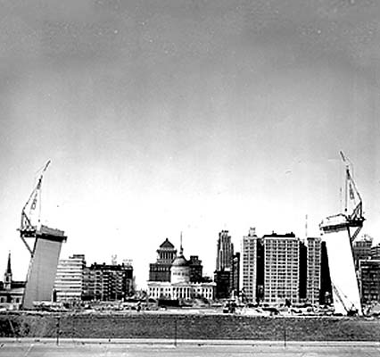
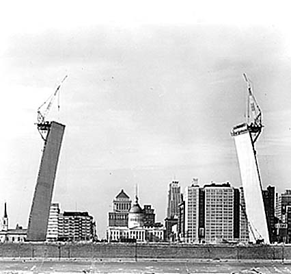
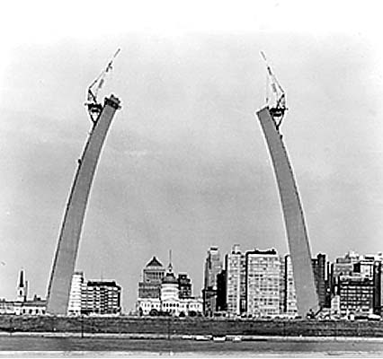
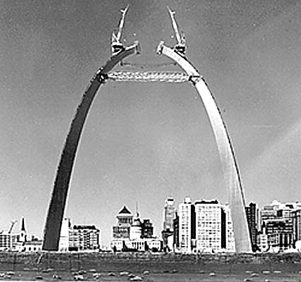
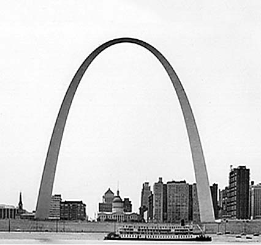
Un tramway/ascenceur intérieur
Il y a trois modes de transport jusqu'au sommet de l'arche : deux escaliers d'urgence comptant 1
076 marches et situés dans chacune des jambes du monument, un ascenseur d'une capacité de 12
passagers permettant d'atteindre 113 mètres de hauteur et un tramway, là aussi dans
chaque jambe.
Chaque tramway est un ensemble de huit compartiments en forme d'œuf d'une capacité unitaire de
cinq places avec une petite fenêtre sur les portes. Comme chaque tramway a une capacité de 40
passagers et qu'il y en a deux, 80 personnes peuvent être transportées en une seule fois. Les
départs se font toutes les dix minutes. Les tramways, à l'instar d'une grande roue, se balancent
et lorsqu'un tramway monte, l'autre descend. Ce mode de mouvement est inspiré donc à la fois
d'une grande roue et d'un ascenseur. Le voyage vers le sommet prend quatre minutes et la
descente trois.
Près du sommet de l'arche, les passagers quittent le tram et montent une légère pente pour entrer
dans la zone d'observation. Cette zone arquée mesure 20 mètres de long sur 2,1 mètres de large.
Elle peut contenir au maximum environ 160 personnes, soit l'équivalent de quatre tramways. Seize
fenêtres permettent de voir de chaque côté, la vue peut atteindre 48 kilomètres par beau temps.

 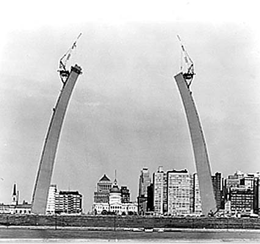
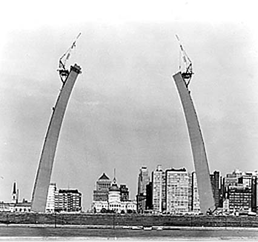

 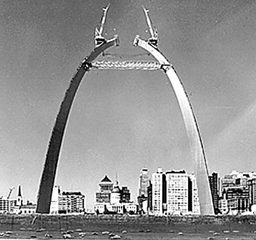
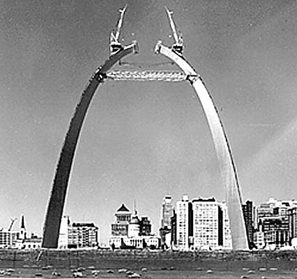
 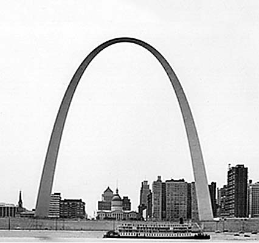
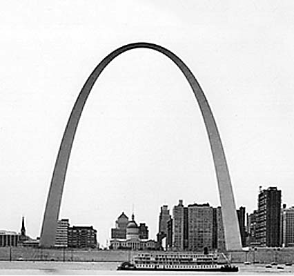